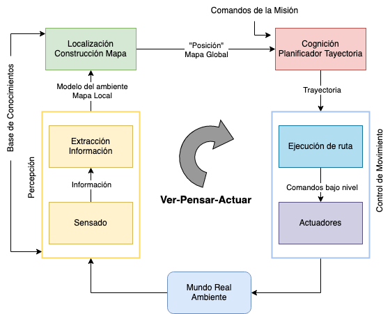
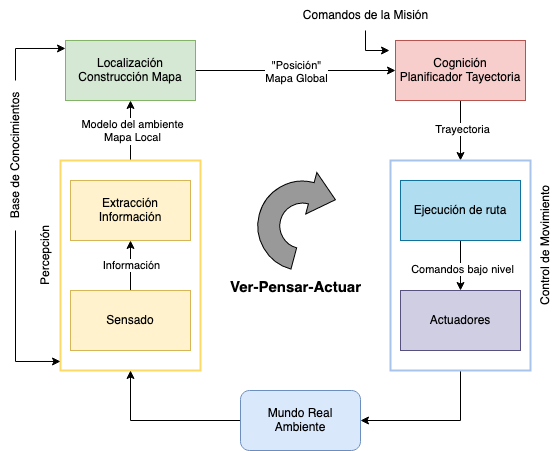

Robótica y las ciencias computacionales
Maestría en Ciencias en Ingeniería y Tecnologías Computacionales
Ingeniería Computacional

Luis Alberto Ballado Aradias
Maestría en Ciencias de la Ingenieria en Tecnologias Computacionales
Lineas de investigación
Ingeniería Computacional (IC)
Inteligenica Computacional y Optimización Avanzada (ICOA)
Tecnologías para la Gestión de Datos y Redes (TGDR)
Robótica
Tipos de robots
- Industriales
- Servicios


Robótica
Planificación de trayectorias
- El problema consiste en generar una ruta válida para mover un robot de una configuración inicial a una configuración deseada.


El problema es de tipo NP-HARD


Ciclo Sentir-Pensar-Actuar


 


Simuladores
- Baratos
- Rápidos
- Seguros


Zhang et al. 2020
Robot Operating System (ROS)
Estrategias para la exploración coordinada multi-VANT
Retos
Representación del mundo
Trayectorias libres de colisiones
Repartición de tareas de exploración
Toma de decisiones inteligente

Veamos un demo
Conclusiones
- Eficiencia y cobertura mejorada
- Optimización de recursos y tiempo
- Adaptabilidad a entornos dinámicos
- Aplicaciones versátiles y potencial de innovación
¡Gracias!
luis.ballado@cinvestav.mx